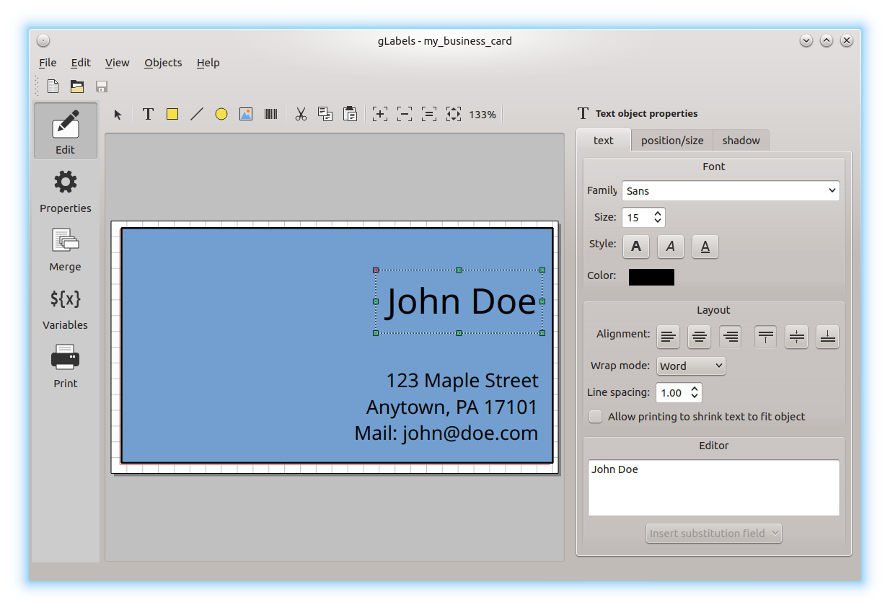
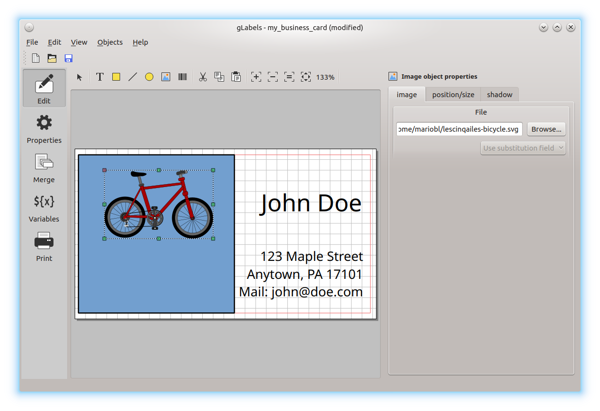

Editing a Label or Card Design
Let’s say you’ve run out of business cards and don’t just want to print new ones, but rather design a completely new layout.
In gLabels, create a new project as described in Creating a New gLabels Project. Choose a suitable template for your business cards to be printed (see Creating a New gLabels Project).
Think about what your new business card could look like. Your favorite color would be a good idea, right? So, let’s start by coloring the whole card.
Click on the yellow square in the upper toolbar. The mouse pointer now shows a crosshair and the chosen square. Move the pointer over the drawing area and click on it, to paste the square. For the time being, the dropped square has a standard color and standard heigth and width. In the panel on the right, you can now change the width and color of the surrounding line and the fill color. Just click on the colors to open a drop-down menu where you can change them.
Now you can start with adding your name and address. Click on the T icon in the toolbar and click on the label. A text field appears, which you can resize using the mouse. Type the desired text in the input field in the left bottom corner of the window.
With the buttons above the text input field, you can change the font properties and some more like text alignment and so on. Play a bit with the options; maybe some of them are already known to you from a word processing application.
Note
If you like to have your name in bigger letters than the rest, you will need to create multiple text fields. Font property changes always apply to the whole text field, not only a certain text row.
Have a look at what we now have: Still a bit boring…?

Although it’s your favorite color, maybe you like a white background for your name and address? Click on the colored field and use the mouse pointer on the edges or corners to resize it. Besides that, a small picture would be nice. Do you like bicycling? Search the Openclipart collection for a bike and download the picture. Now create an image object by clicking on the appropriate icon in the toolbar and paste it in the template. Probably you will need to resize the image – in this case, wenn pulling the edges or corners using the mouse, hold the Strg button pressed to keep the aspect ratio (you don’t want a bike with elliptical wheels, right?).
Using just a few basic functions of gLabels, we created a rather attractive business card:
